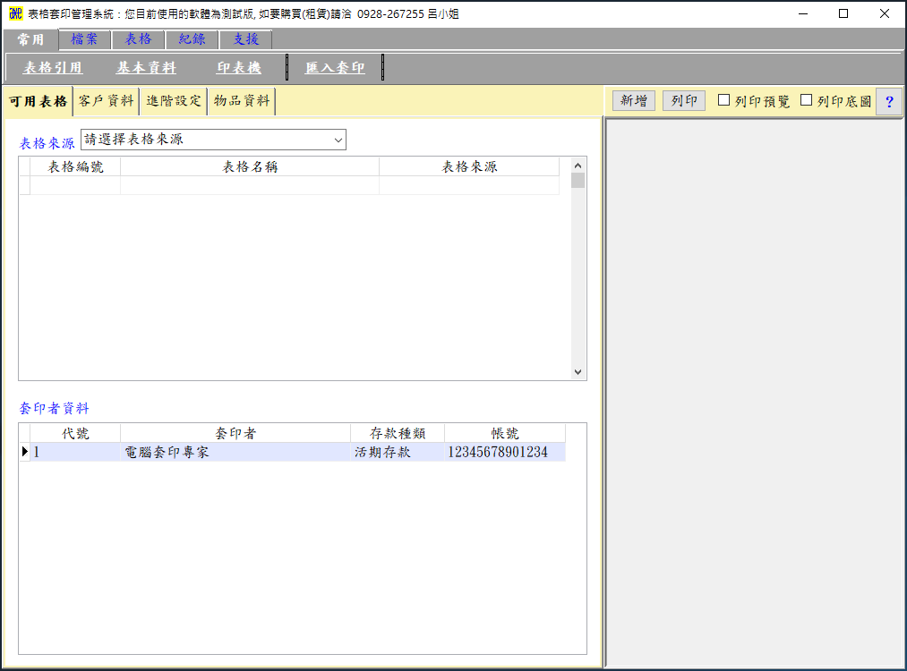

主要工作視窗
執行軟體(FormPrint.exe)即可進入表格套印管理系統。
- 要了解整個軟體架構，請已先看軟體簡介及架構圖。
- 請選擇表格來源：請先選擇選擇要報行套印的表格來源(例如臺灣郵政股份有限公司)，系統會自動開啟排序在最前面的表格，視窗右邊即會出現該表格可輸入的項目。
- 請選擇表格來源：直接點選要執行套印的表格。
- 「列印預覽」及「底圖預覽」：如不勾選列印預覽時，在輸入資料的過程中，配合鍵盤的「Enter」鍵，可循環式的輸入資料及進行套印。
- 列印預覽：套印前先以預覽的方式顯示套印的內容。
- 底圖預覽：連同底圖預覽，模擬表格套印的結果。
- 客戶資料：客戶資料可以由「檔案/客戶管理」視窗進行編輯，如有設定以客戶代號進行查詢的功能時，系統也會動態將輸入的客戶資料，進行資料庫更新。

表格套印視窗